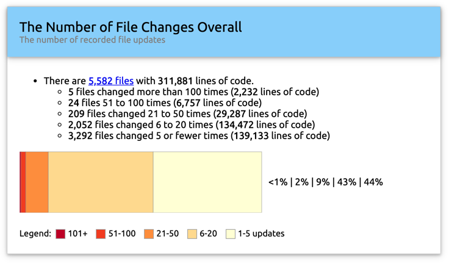

Analysis: File Change History
File change analysis takes as an input the list of dates on which source code files changes, and analyses these dates to understand how frequently developers have changed the files, how old are the files they, and how recently developers have updated them.
Soknotes cannot itself get the dates of file changes from the source code files and folders. You need to provide a data changes list as a textual file and configure the link to this file in the Sokrates configuration file (you need to enter the path to this file in the field “filesAgeImportPath” in the analysis section of the configuration file).
Sokrates uses as a convention the output that you can generate using git command-line tools. The following command is recommended for creating the list of changes for Sokrates analysis:
git ls-files -z | xargs -0 -n1 -I{} -- git log --format="%ai {}" {} > git-history.txtThe previous command assumes that you are running it in the root of your source code project and that your source code project is a proper git repository (i.e., there should be a .git subfolder in the root folder of your project).
The command generates a textual file named git-history.txt. The following fragment illustrates the format of this file:
date & time of change path (from 27th character onwards)
2020-05-18 21:40:43 +0200 cli/src/main/java/nl/obren/sokrates/cli/CommandLineInterface.java
2020-05-17 22:31:03 +0200 cli/src/main/java/nl/obren/sokrates/cli/CommandLineInterface.java
2020-01-02 11:22:25 +0100 cli/src/main/java/nl/obren/sokrates/cli/CommandLineInterface.java
2019-12-15 11:04:41 +0100 cli/src/main/java/nl/obren/sokrates/cli/CommandLineInterface.java
2019-12-15 00:00:04 +0100 cli/src/main/java/nl/obren/sokrates/cli/CommandLineInterface.java
2019-12-14 23:47:19 +0100 cli/src/main/java/nl/obren/sokrates/cli/CommandLineInterface.java
2019-12-14 21:09:13 +0100 cli/src/main/java/nl/obren/sokrates/cli/CommandLineInterface.java
2019-12-14 16:11:16 +0100 cli/src/main/java/nl/obren/sokrates/cli/CommandLineInterface.java
2019-12-14 14:52:55 +0100 cli/src/main/java/nl/obren/sokrates/cli/CommandLineInterface.java
2019-12-11 11:05:57 +0100 cli/src/main/java/nl/obren/sokrates/cli/CommandLineInterface.java
2019-12-10 20:20:22 +0100 cli/src/main/java/nl/obren/sokrates/cli/CommandLineInterface.java
2019-12-02 13:50:55 +0100 cli/src/main/java/nl/obren/sokrates/cli/CommandLineInterface.java
2019-11-30 15:35:42 +0100 cli/src/main/java/nl/obren/sokrates/cli/CommandLineInterface.java
2019-11-29 21:35:16 +0100 cli/src/main/java/nl/obren/sokrates/cli/CommandLineInterface.java
2019-11-13 20:06:16 +0100 cli/src/main/java/nl/obren/sokrates/cli/CommandLineInterface.java
2019-11-09 21:21:11 +0100 cli/src/main/java/nl/obren/sokrates/cli/CommandLineInterface.javaEach line in the file represents one change of one file. The first 26 characters of each line represent the date and time of a file update (e.g., a git commit). Sokrates currently uses only the date part of this string and ignores the time. The rest of the line contains the relative path to the file.
While the command we used to generate a history file is a git specific command, Sokretes itself does not have any git dependencies. If you create this file using another tool, respecting the described format of each line, Sokrates will work with it.
After you have generated the input file and configured Sokrates, you can create reports on file changes. The example of this report you can see here.

Sokrates provides three types of analyses on file changes:
- file changes frequency,
- file age,
- file recency.
The Sokrates’ file changes frequency analysis identifies the most and least frequently changed files. Sokrates uses five categories to group files: files changed five or fewer times, files changed 6 to 20 times, files changed 21 to 50 times, files changed 51 to 100 times, and files changed over 100 times.

The Sokrates’ file age analysis looks when the file creation date, assuming that the oldest date of the file update is its creation date. Sokrates groups files in the following five categories according to their age: files less than a month old, files one to three months old, files three to six months old, files six to 12 months old, and files more than a year old.
The Sokrates’ file changes frequency analysis looks at the latest date at which the file has been changed. Sokrates groups files in the following five categories according to the recency of their changes: files changes in the past month, files changes one to three months ago, files changed three to six months ago, files changed six to 12 months ago, and files changed more than a year ago.

Once you have an overview of files in their age, freshness, or update frequency categories, it may be interesting to compare the quality of code in these categories. Soknotes facilitates this process, creating the configuration files that you can use to automatically analyze source code so that each of the discussed categories is visible as a logical component. You can see if there are differences in code quality between files that are more or less frequently charged, older and new code, and so on. Sokrates creates three such configuration files in the _sokrates/reports/data/extra_analysis folder:
- config_by_file_change_frequency.json, configuring analysis so that componentization follows the frequency of file updates,
- config_by_file_age.json, configuring analysis so that componentization follows the age of files, and
- config_by_file_freshness.json, configuring analysis so that componentization follows the last modification date of files.